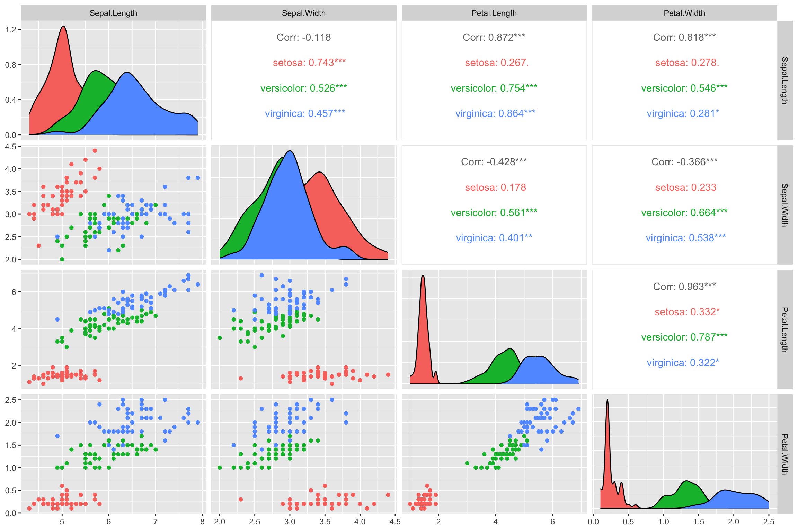
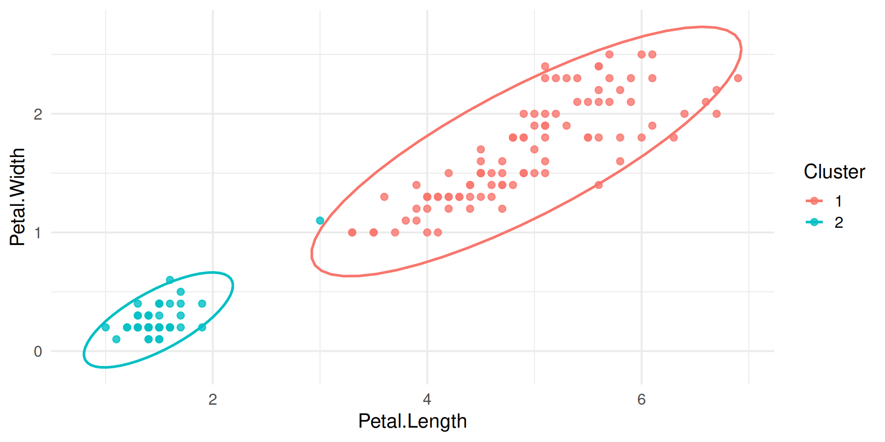
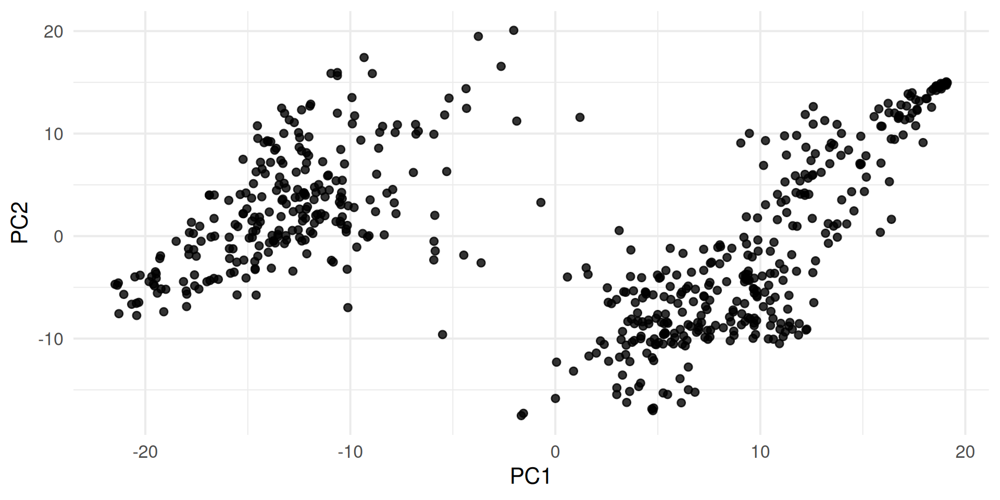
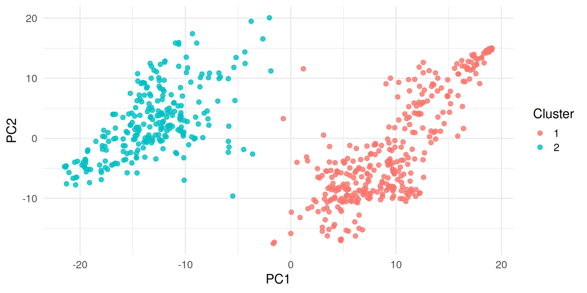

library(pacman)
p_load(ggplot2, knitr, plotly, lubridate, tidyverse, rstan, GGally, BGLR)
data(iris)
ggpairs(
iris,
columns = 1:4,
aes(color = Species)
)
iris_out = iris %>% select(x = Petal.Length, y = Petal.Width, Species)Advanced Statistics Lab
Multivariate Clustering is the extension of univariate clustering (using only one feature for identifying grouping categories), that makes use of more than one feature.
In the case of two features, we can apply the same logic of using mixture models to cluster individuals into groups, only that now we fit a mixture of k multivariate normal distributions.
\[ p(\mathbf{x}) = \sum_{i=1}^{K} \lambda_i f_i(\mathbf{x}), ~~~~~~ with \sum \boldsymbol{\lambda} = 1. \]
Multivariate normal distribution:
\[ f(\mathbf{x}) \sim MVN(\boldsymbol{\mu}, \Sigma) \]
In the bivariate case, the contours of the quntiles of the multivariate normal distributions are ellipses.
The ellipse itself can be defined by the quantile which we want to establish, e.g. we want the area in which 95% of the probability mass falls.
\[ \begin{align} Circle: & \frac{(x - \mu_x)^2}{r^2} + \frac{(y - \mu_y)^2}{r^2} = 1 \\ Ellipses: & \frac{(x - \mu_x)^2}{r_x^2} + \frac{(y - \mu_y)^2}{r_y^2} = 1 \\ \end{align} \]
For the multivariate normal distribution, the squared distance of a data point to the mean in standard deviation units (\(c^2)\) can be calculated as:
\[ (\mathbf{x} - \boldsymbol{\mu})'\Sigma^{-1}(\mathbf{x} - \boldsymbol{\mu}) = c^2. \]
Lets first visualize the features we have got available to the iris data set:

colors = hcl.colors(n = k, palette = palette)
p <- ggplot(dplot, aes(x = x, y = y)) +
geom_point(alpha = 0.8, aes(color = prob))
p_label <- ggplot(dplot, aes(x = x, y = y)) +
geom_point(alpha = 0.8, aes(color = labels))
for(i in 1:k) {
ellipses <- ellipse(mu = mus[[i]], sigma = V[[i]], alpha = 1-0.999, npoints = 250, newplot = FALSE, draw = FALSE) %>%
as.data.frame %>%
rename(a = V1, b = V2)
p = p + geom_point(data = ellipses, aes(x = a, y = b), color = colors[i], size = 0.8, shape = 8)
p_label = p_label + geom_point(data = ellipses, aes(x = a, y = b), color = colors[i], size = 0.8, shape = 8)
}library(ggplot2)
theme_set(theme_minimal(base_size = 16))
iris_out = data.frame(
x = iris$Petal.Length,
y = iris$Petal.Width,
Species = iris$Species
)
set.seed(2026)
km_iris = kmeans(iris_out[, c("x", "y")], centers = 2)
iris_out$cluster = factor(km_iris$cluster)
bivariate_clustering_plot = ggplot(iris_out, aes(x = x, y = y, color = cluster)) +
geom_point(alpha = 0.8) +
stat_ellipse(type = "norm", linewidth = 1) +
labs(x = "Petal.Length", y = "Petal.Width", color = "Cluster")
bivariate_clustering_plot
Principal Component Analysis (PCA) is a feature compression method, that finds transformations of linearly independent features from the total set that are ordered by their importance (variance explained).
\[ \mathbf{X} = \mathbf{USV'} \]
We will be computing the PCAs for a genotype data set, extract the first 2 components and use them to cluster our data using a multivariate mixture model:
data(wheat)
M = wheat.X
pca = prcomp(M, scale = TRUE, center = TRUE)
spca = summary(pca)
plot(spca$importance[2,], ylab = "Proportion of Variance Explained")
plot(spca$importance[3,], ylab = "Cumulative Proportion")
ggplot(data.frame(x = pca$x[,1], y = pca$x[,2]), aes(x = x, y = y)) +
geom_point() +
xlab("PC1") +
ylab("PC2")
K-Means is a clustering technique that minimzes the following function:
\[ f(x) = \sum_{i = 1}^{k}\sum_{j = 1}^{nk} (x_j - \mu_i)^2 \]
